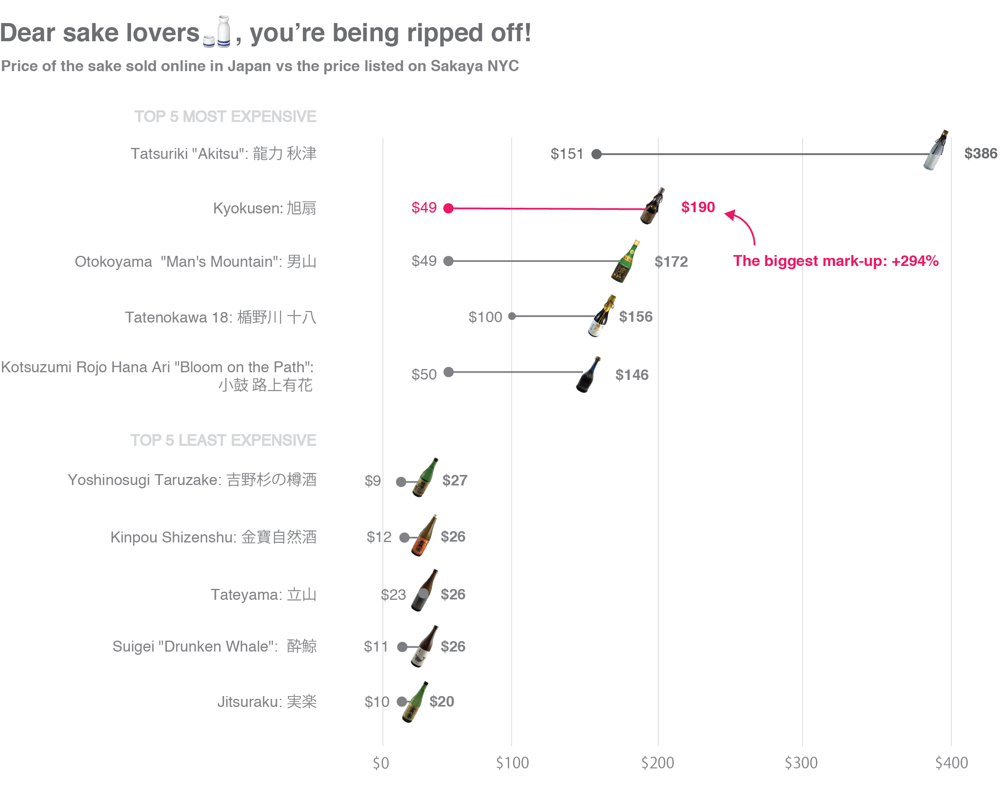

Sake, or Japanese rice wine, is increasingly popular in the United States - and sold at a staggering premium. The three most marked-up sakes sold by Sakaya, a sake retailer in New York City, were ones that cost around 50 dollars in Japan. Kyokusen, with the highest premium, costs almost 300 percent more on Sakaya than in Japan.

Sources: Sakaya, Amazon.co.jp, Rakuten, Kakaku.com, Sake-Marui, Isetan, Tatenokawa, Nishiyama Sake Brewery
Note: Prices of sake in Japan were converted to the US dollar at 0.0093 yen = 1 USD. Sake not available or no longer sold in Japan were excluded from the chart
Sake, or Japanese rice wine, is made by fermenting grains of rice that have been polished to remove the bran. Sake is classified according to how much of each grain of rice is polished away. In general, the more polished the rice, the higher the quality and price of the sake. 'Daiginjo' and 'junmai daiginjo' - which have more than half of the rice milled away - are generally considered to have more complexity and fragrance.
Why does Kyokusen cost almost 300 percent more in America than in Japan?
I don't know! Kyokusen does have a relatively high rice polish of 40 percent, but Tatenokawa 18, which has a polish of 18 percent, costs only 55 percent more on Sakaya than in Japan. Kyokusen did win a silver medal in the junmai daiginjo category at the 2017 International Wine Challenge, one of the most influential wine competitions in the world, but so did Tatenokawa 18.
It's a mystery!